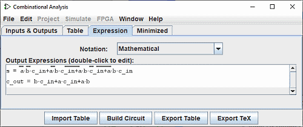
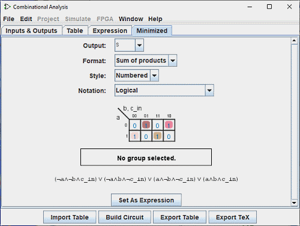

יצירת ביטויים
עבור כל משתנה פלט, חלון הניתוח המשולב שומר על שני מבנים - העמודה הרלוונטית של טבלת האמת, וביטוי בוליאני - המציין כיצד כל פלט מתייחס לקלט שלו. אתה יכול לערוך גם טבלת האמת או הביטוי; השני ישתנה אוטומטית לפי הצורך כדי לשמור על עקביות.
כפי שנראה בעמוד הבא, הביטויים הבוליאניים שימושיים במיוחד בגלל ה-קומבינצית חלון ניתוח ישתמש באלה כשאומרים לבנות מעגל המתאים למצב הנוכחי.
אתה יכול להציג ולערוך את הביטויים באמצעות שתי הכרטיסיות האחרונות של החלון, הכרטיסייה ביטוי והכרטיסייה מוזער.
הכרטיסייה ביטוי

הכרטיסייה ביטוי מאפשרת לך להציג ולערוך את הביטוי הנוכחי המשויך לכל משתנה פלט. הוא מציג בורר "סימון: " ורשימה של הביטויים המתמטיים של המעגל.
הבורר סימון :: משנה את מצב הסימון של ביטויי הפלט. זה מאפשר לך לבחור מבין חמישה סוגי סימון:
- מתמטית :
- הסרגל שלמעלה מייצג את השלילה, Le - את הפונקציה AND ואת הפונקציה + את הפונקציה OR.
- לוגי :
- ה- ¬ מייצג את השלילה, הפונקציה ˄ AND ופונקציית ˅ OR.
- לוגי אלטרנטיבי :
- ה-~ מייצג את השלילה, ˄ הפונקציה AND ו-˅ פונקציית OR.
- תכנות עם : של Boolean
- ה-! מייצג את השלילה, את הפונקציה && ואת הפונקציה || הפונקציה OR.
- תכנות עם ביטים :
- ה-~ מייצג את השלילה, ה- & מייצג את הפונקציה AND ואת ה- | מייצג את הפונקציה OR.
ממש מתחת לבורר, הביטויים מוצגים ברשימה. אתה יכול לערוך את הביטוי בחלונית הטקסט על ידי לחיצה כפולה על שורת הביטוי.
שים לב שטבלת האמת שלך תשתנה באופן בלתי הפיך אם תערוך את הביטויים ולהיפך.
חלונית הטקסט שמתחתיה מציגה את אותו מידע בצורת ASCII. כאן, NOT מיוצג באמצעות טילדה ('~').
אתה יכול לערוך את הביטוי בחלונית הטקסט וללחוץ על כפתור Enter כדי לגרום לו לקחת השפעה; פעולה זו תעדכן גם את טבלת האמת כדי שתתאים אותה. הנקה הלחצן מנקה את חלונית הטקסט, והלחצן החזר משנה את החלונית חזרה לייצוג הביטוי הנוכחי.
שים לב שהביטוי הערוך שלך יאבד אם תערוך את טבלת האמת.
בנוסף לכפל וחיבור המייצגים AND ו-OR, ביטוי שאתה מקליד עשוי להכיל כל אחד מהם אופרטורים לוגיים של C/Java, כמו גם המילים עצמן.
| עדיפות גבוהה ביותר | ~ ! ' | NOT |
|---|---|---|
| (none) & && | AND | |
| ^ | XOR | |
| העדיפות הנמוכה ביותר | + | || | OR |
הדוגמאות הבאות הן כולן ייצוגים תקפים של אותו ביטוי. אתה יכול גם לערבב את האופרטורים.
| a' (b + c) |
| !a && (b || c) |
| NOT a AND (b OR c) |
באופן כללי, סוגריים בתוך רצף של AND (או OR או XOR) אינם חשובים. (בפרט, כאשר לוגיסים יוצר מעגל מתאים, הוא יתעלם מסוגריים כאלה.)
הכרטיסייה ממוזער

הכרטיסייה האחרונה מציגה את הביטוי המינימלי של אחת מהעמודות של טבלת האמת. בפאנל הזה יש ארבעה סלקטורים, שולחן הקרנוט והביטוי המינימלי.
עם הבורר העליון פלט:, תוכל לבחור את הפלט הממוזער של עמודה של טבלה שברצונך להציג.
הבורר הבא פורמט:: מאפשר לך לציין אם ברצונך להפיק סכום של מוצרים או סכום של סכומים.
הבורר סגנון: מווסת את הצגת המשתנים בקצוות הטבלה. אוֹ עם ערכים בינאריים או עם קווים על הערכים האמיתיים.

|
| מְמוּספָּר |

|
| שורה |
לבורר סימון: יש את אותם מאפיינים כמו לחלונית ביטוי בורר (ראה למעלה)
מפת Karnaugh המתאימה למשתנה תופיע מתחת לבורר. אתה יכול ללחוץ על מפת קרנו כדי לשנות את ערכי טבלת האמת המתאימים. מפת Karnaugh תציג גם את המונחים שנבחרו כעת עבור הביטוי הממוזער כמלבנים מעוגלים שקופים למחצה.
מתחת לזה מופיע הביטוי הממוזער עצמו, מעוצב כמו בתצוגה של כרטיסיית הביטוי. Logisim משתמשת ב- אלגוריתם Quine-McCluskey לחישוב הביטוי הממוזער. זה שווה ערך למפת קרנו, אבל זה חל על כל מספר של משתני קלט.
הלחצן הגדר כביטוי מאפשר לך לבחור את הביטוי הממוזער בתור ביטוי המתאים למשתנה. זה בדרך כלל לא יהיה נחוץ, כמו עריכות בטבלת האמת תוצאה של שימוש בביטוי הממוזער עבור העמודה שהשתנתה; אבל אם תזין ביטוי דרך ה לשונית ביטוי, זו יכולה להיות דרך נוחה לעבור לביטוי הממוזער המתאים.
הבא: יצירת מעגל.